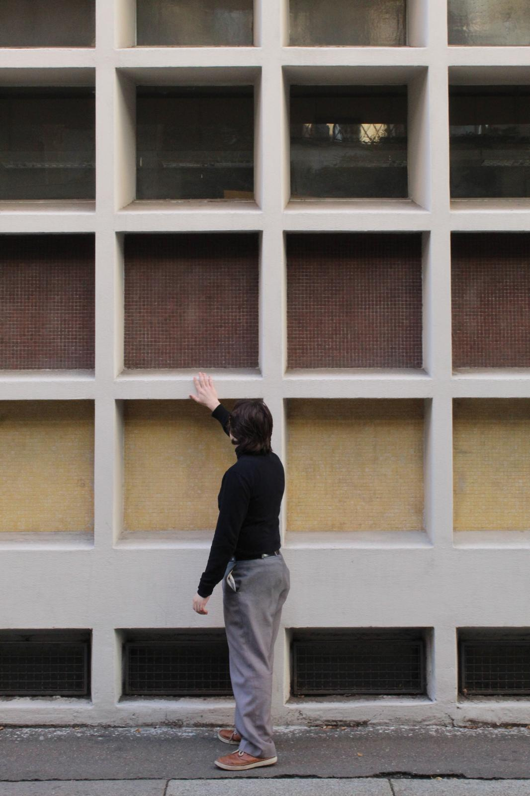

Me
I'm a graduate with a master's degree in Architecture & Urban Planning and a BA in Architecture & Urban Planning. Professionally, I draw buildings for planning applications. I am not an architect, but I have over 30,000 hours of practice and education behind me. My interests lie in tall buildings, tectonics and computational design. I seek most projects myself.
